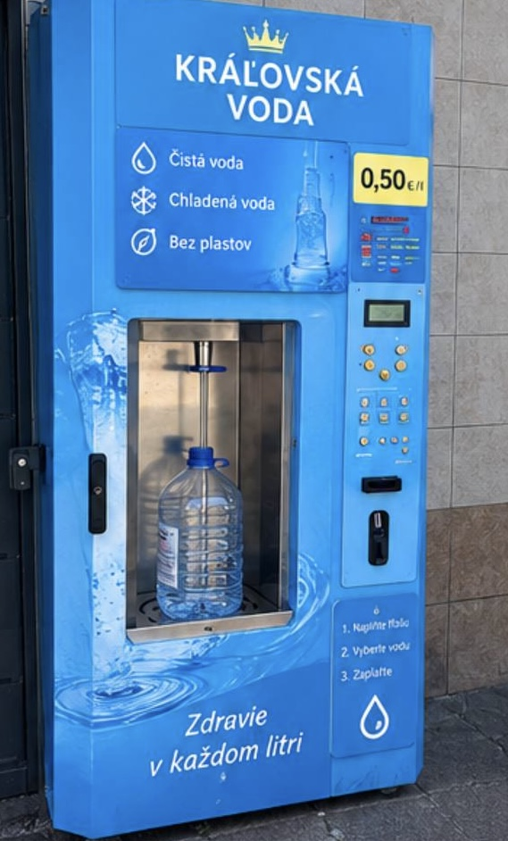
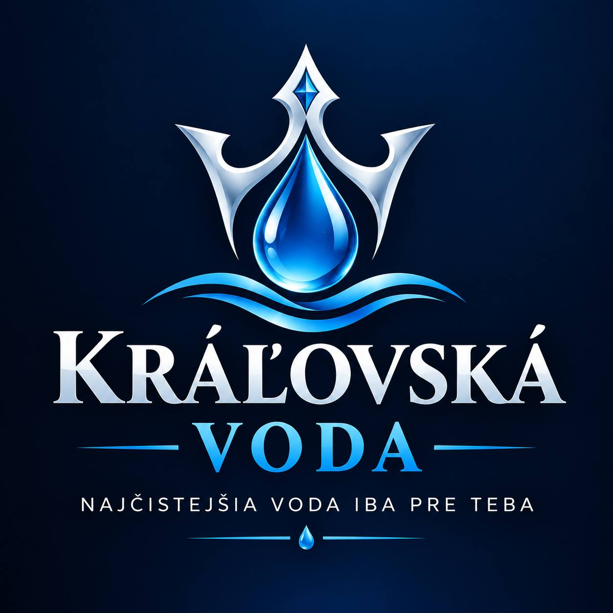

Charakteristika produktu

Hlavným produktom projektu Královská voda je filtrovaná pitná voda predávaná prostrednictvom samoobsluzneho vodomatu. Zakaznik si moze nacerpat vodu do vlastnej flase alebo inej vhodnej nádoby. Podia vybavenia konkrétneho automatu bude dostupná aj chladená voda. Voda bude pochádzat z vodovodnej siete FRESH a bude prechádzat viacstupñovou filtráciou, ktorá zabezpeci cistotu, sviezost a prijemnú chut. Cielom je ponúkat kvalinú vodu s lepsou chutou ako bezné balené vody, a zároven jednoduch a ekologicky spösob, ako sa k nej dostat.
Nasa konkureniná vyhoda spociva v kombinácii viacerich faktorov:
- Lepsia chut vody - vdaka filtrácii bude voda prijemná a osviezujúca.
- Pohodlie - zákaznik si moze nacerpat presne také mnozstvo, aké potrebuje.
- Monost chladenia - ideálne v teplych dñoch.
- Ekológia - pouzivanie vlastej flase nizuje mozstvo plastového odpadu.
- Vyhodná poloha - automat bude umiestneny priamo pred FRESH v mestskej casti, kde sa denne pohybuje vela ludi.
V porovnani s beznou balenou vodou bude Královská voda ponúkat leps orelity a pohe.kvality a javialiy a pohodlia. abez nutnostj kupovat plastové flase, s moznostou vyuzit chladenú vodu.
Cielová skupina Hlavnou cielovou skupinou sú obyvatelia mestskej casti Nad jazerom a okolitich sidlisk, ktori hladajú zdravú, kvalitnú a chutnú vodu. Dalsou skupinou sú studenti, pracujúci l'udia, rodiny s detmi a zakaznici FRESH a Kauflandu. Projekt je vhodny pre vsetky vekové kategórie, ktoré preferujú zdravy zivotny stýl a pohodiny pristup k pitnej vode.
Miesto predaja a dostupnosť Vodomаt Kráľovská voda bude umiestnený pred predajňou FRESH v mestskej časti Nad jazerom. Toto miesto bolo vybrané kvôli veľkému pohybu ľudí a dobrej dostupnosti pre obyvateľov okolia. Zákazníci si budú môcť kúpiť vodu počas nákupov alebo pri každodenných prechádzkach. Automat bude jednoduchý na používanie a umožní rýchle načerpanie vody bez zbytočného čakania.
product a hodnota pre zakaznika
Produktom bude pitná voda upravená vhodným filtračným systémom a podľa technických možností automatu aj chladená. Zákazník si vodu načerpá do vlastnej čistej fľaše alebo inej vhodnej nádoby. Plánovaná základná ponuka zahŕňa neperlivú vodu; sýtená voda nie je súčasťou základného variantu, kým sa nepotvrdí technická a finančná vhodnosť.
Produktom bude pitná voda upravená vhodným filtračným systémom a podľa technických možností automatu aj chladená. Zákazník si vodu načerpá do vlastnej čistej fľaše alebo inej vhodnej nádoby. Plánovaná základná ponuka zahŕňa neperlivú vodu; sýtená voda nie je súčasťou základného variantu, kým sa nepotvrdí technická a finančná vhodnosť.

Zdroje a poznámky
Zdroje a poznámky 1. Slov-Lex, zákon č. 355/2007 Z. z. o ochrane, podpore a rozvoji verejného zdravia – ustanovenia o pitnej vode a jej kontrole: https://www.slov-lex.sk/ezbierky/pravne- predpisy/SK/ZZ/2007/355/ 2. Oficiálna stránka Kaufland Košice – Nad jazerom, adresa Napájadlá 1/D: https://predajne.kaufland.sk/servis/predajne/kosice-nad-jazerom-7420.html 3. Inzerát komerčných priestorov pri predajni FRESH v Košiciach – Nad jazerom uvádza 11 €/m² mesačne pre 200 m² priestoru; ide o inú plochu a nie je to cenová ponuka na 1 m² pred vstupom: https://www.reality.sk/priestory/prenajom-novych- obchodno-prevadzkovych-priestorov-v-obchodnom-centre-levocska-ul/JupDid2kThz/ Finančné hodnoty v tomto pláne sú odhady autora na účely rozhodovania. Nie sú potvrdenými cenami dodávateľov, prenajímateľa ani úradov. Pri každom kroku sa musia nahradiť reálnymi údajmi. Dokument nepredstavuje právne, daňové ani hygienické stanovisko.
Propagácia bude prebiehat najma prostrednictvom:
- viditelinosti automatu (vyrazny dizajn, nápisy v slovenskom jazyku)
- sociálnych sieti (Facebook, Instagram),
- spolupráce s FRESH (letáky, informácie v predajni),
- lokálnej reklamy (plagáty, bannery, QR kód na hodnotenie).